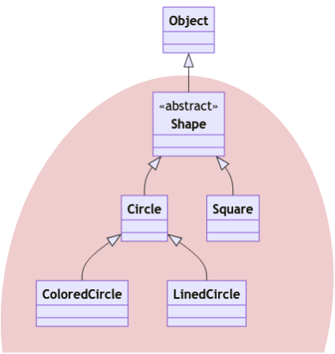
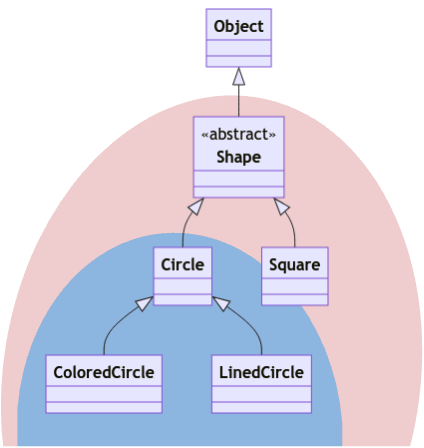
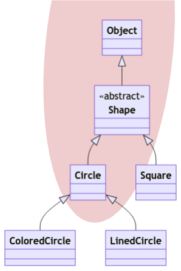
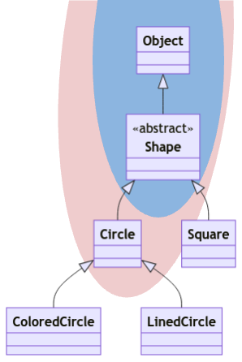
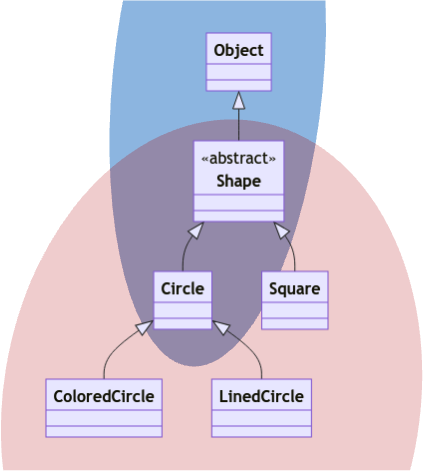

Unit 26: Wildcards
Learning Objectives
Students should
- be aware of the meaning of wildcard
?and bounded wildcards. - know how to use wildcards to write methods that are more flexible in accepting a range of types.
- know that upper-bounded wildcard is covariant and lower-bounded wildcard is contravariant.
- know the PECS principle and how to apply it.
- be aware that the unbounded wildcard allows us to not use raw types in our programs.
Running Example
For our running example in this unit, we will be using the following subtyping relationship.
1 2 3 4 5 6 7 8 9 10 11 12 13 14 15 16 17 18 19 | |
The class diagram for visualization is shown below. Note that Shape extends from Object implicitly.

contains with Array<T>
Now that we have our Array<T> class, let's modify our generic contains method and replace the type of the argument T[] with Array<T>.
1 2 3 4 5 6 7 8 9 10 11 12 | |
1 2 3 4 5 6 7 8 9 10 11 12 | |
Similar to the version that takes in T[], using generics allows us to constrain the type of the elements of the array and the object to search for to be the same. This allows the following code to type-check correctly:
1 2 3 4 5 6 | |
But trying to search for a circle in an array of strings would lead to a type error:
1 | |
Consider now having an array of shapes.
1 2 3 4 5 6 7 | |
As expected, we can pass Shape as the argument for T, and search for a Shape in an instance of Array<Shape>. Similarly, we can pass Circle as the argument for T and search for a Circle in an instance of Array<Circle>.
We could also look for a Circle instance from Array<Shape> if we pass Shape as the argument for T.
1 | |
Note that we can pass in a Circle instance as a Shape, since Circle <: Shape.
Recall that generics are invariant in Java (i.e., there is no subtyping relationship between Array<Shape> and Array<Circle>). Array<Circle> is not a subtype of Array<Shape>. Otherwise, it would violate the Liskov Substitution Principle, we can put a square into an Array<Shape> instance, but we can't put a square into an Array<Circle> instance.
So, we can't call:
1 | |
The following would result in compilation errors as well:
1 2 | |
Thus, with our current implementation, we can't look for a shape (which may be a circle) in an array of circles, even though this is something reasonable that a programmer might want to do. This constraint is due to the invariance of generics -- while we avoided the possibility of run-time errors by avoiding covariance arrays, our methods have become less general.
Let's see how we can fix this with bounded type parameters first. We can introduce another type parameter, say S, to remove the constraints that the type of the array must be the same as the type of the object to search for. I.e., we change from
1 | |
to:
1 | |
But we don't want to completely decouple T and S, as we want T to be a subtype of S. We can thus make T a bounded type parameter, and write:
1 | |
Now, we can search for a shape in an array of circles.
1 | |
Copying to and from Array<T>
Let's consider another example. Let's add two methods copyFrom and copyTo, to Array<T> so that we can copy to and from one array to another.
1 2 3 4 5 6 7 8 9 10 11 12 13 14 15 16 17 18 19 20 21 22 23 24 25 26 27 28 29 30 31 32 33 34 35 | |
With this implementation, we can copy, say, an Array<Circle> to another Array<Circle>, an Array<Shape> to another Array<Shape>, but not an Array<Circle> into an Array<Shape>, even though each circle is a shape!
1 2 3 4 5 | |
Upper-Bounded Wildcards
Let's consider the method copyFrom. We should be able to copy from an array of shapes, an array of circles, an array of squares, etc, into an array of shapes. In other words, we should be able to copy from an array of any subtype of shapes into an array of shapes. Is there such a type in Java?
The type that we are looking for is Array<? extends Shape>. This generic type uses the wildcard ?. Just like a wild card in card games, it is a substitute for any type. A wildcard can be bounded. Here, this wildcard is upper-bounded by Shape (i.e., the ? can be substituted with either Shape or any subtype of Shape).
They key here is substituted. Consider our running example. Given the type Array<? extends Shape>, the ? can be substituted with any one of the following:
Shape: becauseShape<:Shapeso we getArray<Shape>.Circle: becauseCircle<:Shapeso we getArray<Circle>.Square: becauseSquare<:Shapeso we getArray<Square>.ColoredCircle: becauseColoredCircle<:Shapeso we getArray<ColoredCircle>.LinedCircle: becauseLinedCircle<:Shapeso we getArray<LinedCircle>.
This can be seen more clearly by looking at the class diagram. In the class diagram below, the types that can be used to substitute ? is highlighted with red background.

What this means is that we can actually do the following sequence of assignments.
1 2 3 | |
The upper-bounded wildcard is an example of covariance. The upper-bounded wildcard has the following subtyping relations:
- If
S<:T, thenA<? extends S><:A<? extends T>(covariance) - For any type
S,A<S><:A<? extends S>
To see this, consider Array<? extends Circle> and Array<? extends Shape>. Now we look at the types that can be used to substitute ? in both cases. The types are summarized in the table below.
Array<? extends Circle> |
Array<? extends Shape> |
|---|---|
| - | Shape |
Circle |
Circle |
| - | Square |
ColoredCircle |
ColoredCircle |
LinedCircle |
LinedCircle |
So, whatever type can be used to substitute ? in Array<? extends Circle> can also be used to substitute ? in Array<? extends Shape>. So the following assignment would work because whatever type we substitute ? with, Array<? extends Shape> can accept those.
1 2 | |
The table can also be visualized using class diagram. Blue background highlights the type that can be used to substitute ? for Array<? extends Circle> and red background highlights the type that can be used to substitute ? for Array<? extends Shape>. If one is a subset of the other, it implies a subtyping relationship.

Simply using the covariance rule above, we can also infer a few things. For instance, we can infer Array<Circle> <: Array<? extends Shape>. The proof is as follows
Circle<:Shape(given)Array<Circle><:Array<? extends Circle>(upper-bounded wildcard property)Array<? extends Circle><:Array<? extends Shape>(using (1) and covariance of upper-bounder wildcard)Array<ircle><:Array<? extends Shape>(transitivity of subtyping relationship using (2) and (3))
So now, because Array<Circle> <: Array<? extends Shape>, if we change the type of the parameter to copyFrom to Array<? extends T>,
1 2 3 4 5 6 | |
We can now call:
1 | |
without error.
Lower-Bounded Wildcards
Let's now try to allow copying of an Array<Circle> to Array<Shape>.
1 | |
by doing the same thing:
1 2 3 4 5 6 | |
The code above would not compile. We will get the following somewhat cryptic message when we compile with the -Xdiags:verbose flag:
1 2 3 4 5 6 7 8 9 10 11 | |
CAP?
The type CAP#1 is an internal compiler name for the implicit type parameter represented by the wildcard (i.e., ?). The name comes from "capture". The numbering is to differentiate the different captured types.
Similar to how different declared type parameters are renamed with #1 and #2, all the ? are referring to different implicit type parameters. So, the different ? can be replaced with different type arguments.
Let's try not to understand what the error message means first, and think about what could go wrong if the compiler allows:
1 | |
Here, we are trying to put an instance with compile-time type T into an array that contains elements with the compile-time type of T or subtype of T.
The copyTo method of Array<Shape> would allow an Array<Circle> as an argument, and we would end up putting instance with compile-time type Shape into Array<Circle>. If all the shapes are circles, we are fine, but there might be other shapes (rectangles, squares) in this instance of Array<Shape>, and we can't fit them into Array<Circle>! Thus, the line
1 | |
is not type-safe and could lead to ClassCastException during run-time.
Where can we copy our shapes into? We can only copy them safely into an Array<Shape>, Array<Object>, for instance. In other words, into arrays containing Shape or supertype of Shape. Unfortunately our running example no longer have GetAreable. Otherwise, we can also safely insert into Array<GetAreable> too!
We need a wildcard lower-bounded by Shape, and Java's syntax for this is ? super Shape. Using this new notation, we can replace the type for dest with:
1 2 3 4 5 6 | |
The code would now type-check and compile. We can do the entire reasoning similar to the reasoning we did for upper-bounder wildcard. First, let's keep it specific. We will let T to be Circle. This means Array<? super T> should be treated as Array<? super Circle>1. So now we try to figure out what are the types that can be used to substitute ? in Array<? super Circle>. There are only 3 possible types:
Circle: becauseCircle<:Circleso we getArray<Circle>.Shape: becauseCircle<:Shapeso we getArray<Shape>.Object: becauseCircle<:Objectso we getArray<Object>.
Again, visually, this will be the following class diagram.

Now, looking back at the relevant part of the code of copyTo, we see the following line:
1 | |
First, the method set has the following signature: Array::set(int, T). The type T depends on the type of dest. Second, the method get has the following descriptor T Array::get(int). The typeT depends on the type of this.
Now, remember, the compile-time type of dest is Array<? super Circle> and the compile-time type of this is Array<Circle> (because we let T to be Circle). By process of enumeration, we see that all possibilities of types that can be used to substitute ? in the compile-time type of dest can safely accept Circle.
Circle: the method signature forsetisArray::set(int, Circle)and the return type ofArray::get(int)isCircleso this type-checked becauseCircle<:Circle.Shape: the method signature forsetisArray::set(int, Shape)and the return type ofArray::get(int)isCircleso this type-checked becauseCircle<:Shape.Object: the method signature forsetisArray::set(int, Object)and the return type ofArray::get(int)isCircleso this type-checked becauseCircle<:Object.
The lower-bounded wildcard is an example of contravariance. We have the following subtyping relations:
- If
S<:T, thenA<? super T><:A<? super S>(contravariance) - For any type
S,A<S><:A<? super S>
Without going into the lengthy explanation with the tables, we will show the class diagram showing that Array<? super Shape> is a subtype of Array<? super Circle>.

Since we did the proof for upper-bounded wildcard, let us do the same for lower-bounded wildcard. We will show that Array<Shape> <: Array<? super Circle>.
Circle<:Shape(given)Array<Shape><:Array<? super Shape>(lower-bounded wildcard property)Array<? super Shape><:Array<? super Circle>(using (1) and contravariance of lower-bounded wildcard)Array<Shape><:Array<? super Circle>(transitivity of subtyping relationship using (2) and (3))
The line of code below now compiles:
1 | |
Our new Array<T> is now
1 2 3 4 5 6 7 8 9 10 11 12 13 14 15 16 17 18 19 20 21 22 23 24 25 26 27 28 29 30 31 32 33 34 35 | |
Non Subtype Reasoning
So far, we have shown the visualization for subtyping relationship. In both cases, the types that can be substituted for ? for the subtype is a subset of the types that can be substituted for ? for the supertype. What about the case where there is no subtyping relationship?
Consider Array<? extends Shape> and Array<? super Circle>. Neither are a subtype of the other. So how would this look like in the class diagram?

You can see that there is an overlap but clearly, none can be fully contained within the other. This is what it looks like when there is no subtyping relationship.
PECS
Now we will introduce the rule that governs when we should use the upper-bounded wildcard ? extends T and a lower-bounded wildcard ? super T. It depends on the role of the variable. If the variable is a producer that returns a variable of type T, it should be declared with the wildcard ? extends T. Otherwise, if it is a consumer that accepts a variable of type T, it should be declared with the wildcard ? super T.
As an example, the variable src in copyFrom above acts as a producer. It produces a variable of type T. The type parameter for src must be either T or a subtype of T to ensure type safety. So the type for src is Array<? extends T>.
On the other hand, the variable dest in copyTo above acts as a consumer. It consumes a variable of type T. The type parameter of dest must be either T or supertype of T for it to be type-safe. As such, the type for dest is Array<? super T>.
This rule can be remembered with the mnemonic PECS, or "Producer Extends; Consumer Super".
Deriving PECS
While it is easier to simply memorize PECS, you can actually derive these rules yourself. The key here is to change your point of view from the client to the implementer. As a client, you have to think about how you can use the methods implemented by the implementer given the method descriptor. Let's simulate that.
First, a convention. Since we are looking through the lens of a method, the method consumes a value via its parameter. Additionally, the method produces a value via its return value.
Assume that we have the following six variables. We have to exclude Shape because it cannot be instantiated. Note that ColoredCircle <: Circle <: Object.
1 2 3 4 5 6 7 | |
Now consider an implementer has implemented the method f with the following descriptor: Circle f(Circle). We can then see which of the method invocation works.
| Invocation | Argument Type | Compilation |
|---|---|---|
f(arg1) |
Object |
|
f(arg2) |
Circle |
|
f(arg3) |
ColoredCircle |
f(arg1) fails compilation because the parameter is accepting Circle but we are passing Object. Since Object is not a subtype of Circle, we have compilation error.
Now we assume that the argument will always be accepted by the parameter and we look at whether the return type can be accepted by the variable.
| Invocation | Variable Type | Compilation |
|---|---|---|
res1 = f(..) |
Object |
|
res2 = f(..) |
Circle |
|
res3 = f(..) |
ColoredCircle |
res3 = f(..) fails compilation because the return type is Circle. But we are trying to assign it to ColoredCircle. Since Circle is not a subtype of ColoredCircle, we have compilation error.
Notice how what we have arrived at is the opposite of PECS2. Looking at the consumer (i.e., parameter), we actually have "consumer extends" because we can accept Circle or subtype of Circle (e.g., ColoredCircle). Looking at the produced (i.e., return value), we actually have "producer super" because we can accept Circle or supertype of Circle (e.g., Object).
So how do we derive PECS then? We need to look at it from the point of view of the implementer. Consider that as an implementer, you will always do the following line.
1 | |
So now, we need to know which of the following method descriptor can be used for f. Let's draw two tables, one created by varying the parameter type and the other created by varying the return type. Here we have to assume that each method descriptor are compiled separately and there is no overriding and/or overloading.
| Method Descriptor | Parameter Type | Compilation |
|---|---|---|
Circle f(Object) |
Object |
|
Circle f(Circle) |
Circle |
|
Circle f(ColoredCircle) |
ColoredCircle |
Notice that now we are always passing Circle as argument. So obviously, if a method can accept Object, it can also accept Circle.
| Method Descriptor | Return Type | Compilation |
|---|---|---|
Object f(Circle) |
Object |
|
Circle f(Circle) |
Circle |
|
ColoredCircle f(Circle) |
ColoredCircle |
Similarly, notice that we are always going to assign the return value to a variable that can accept Circle. So if the method always returns ColoredCircle, it can be assigned to Circle.
The result now conforms to PECS! So to derive PECS, you can change your point of view from client to implementer. This follows the explanation we have given for copyTo and copyFrom. We are -- after all -- the implementer of these two functions. In the case of copyTo, we are always going to invoke the line
1 | |
This is similar to how we always execute res2 = f(arg2);. Our choice of the type we can use for res2 and arg2 are now restricted. In our derivation here, we change the method descriptor. But in the explanation in this unit, we restrict the type parameter T to behave the way we want it to by using either upper-bounded or lower-bounded wildcards.
Unbounded Wildcards
It is also possible to have unbounded wildcards, such as Array<?>. Array<?> is the supertype of every parameterized type of Array<T>. Recall that Object is the supertype of all reference types. When we want to write a method that takes in a reference type, but we want the method to be flexible enough, we can make the method accept a parameter of type Object. Similarly, Array<?> is useful when you want to write a method that takes in an array of some specific type, and you want the method to be flexible enough to take in an array of any type. For instance, if we have:
1 2 | |
We could call it with:
1 2 3 4 | |
A method that takes in generic type with unbounded wildcard would be pretty restrictive, however. Consider this:
1 2 3 4 5 | |
What should the type of the returned element x be? Since Array<?> is the supertype of all possible Array<T>, the method foo can receive an instance of Array<Circle>, Array<String>, etc. as an argument. The only safe choice for the type of x is Object.
The type for y is every more restrictive. Since there are many possibilities of what type of array it is receiving, we can only put null into array!
There is an important distinction to be made between Array, Array<?> and Array<Object>. Whilst Object is the supertype of all T, it does not follow that Array<Object> is the supertype of all Array<T> due to generics being invariant. Therefore, the following statements will fail to compile:
1 2 | |
Whereas the following statements will compile:
1 2 | |
If we have a function
1 2 | |
Then, the method bar is restricted to only takes in an Array<Object> instance as argument.
1 2 3 4 | |
What about raw types? Suppose we write the method below that accepts a raw type
1 2 | |
Then, the method qux is also flexible enough to take in any Array<T> as argument.
1 2 3 4 | |
Unlike Array<?>, however, the compiler does not have the information about the type of the component of the array, and cannot type check for us. It is up to the programmer to ensure type safety. For this reason, we must not use raw types.
Intuitively, we can think of Array<?>, Array<Object>, and Array as follows:
Array<?>is an array of objects of some specific, but unknown type;Array<Object>is an array ofObjectinstances, with type checking by the compiler;Arrayis an array ofObjectinstances, without type checking.
Unbounded and Non Wildcard
For completeness, we will show the visualization in class diagram for Array<?> and for non wildcard such as Array<Circle>. In the case of unbounded, it actually encompasses all types!

Clearly, it cannot be a subtype of anything besides Array<?> and Object. The latter because Object is the root of the class hierarchy. But at that point, we cannot invoke the methods intended for Array. So while it is more general, it is less flexible to use Object.
Now for non wildcard, it is actually encompasses just that single type. This is why Array<Circle> is a subtype of both Array<? extends Circle> and Array<? super Circle> when we reason only using class diagram visualization.

Back to contains
Now, let's simplify our contains methods with the help of wildcards. Recall that to add flexibility into the method parameter and allow us to search for a shape in an array of circles, we have modified our method into the following:
1 2 3 4 5 6 7 8 9 10 11 12 | |
Can we make this simpler using wildcards? Since we want to search for an object of type S in an array of its subtype, we can remove the second parameter type T and change the type of array to Array<? extends S>:
1 2 3 4 5 6 7 8 9 10 11 12 | |
1 2 3 4 5 6 7 8 9 10 11 12 | |
We can double-check that array is a producer (it produces curr on Line 5) and this follows the PECS rules.
Now, we can search for a shape in an array of circles.
1 | |
What is the difference between the two? In version 0.6, we require two type parameters while in version 0.7 we only require one. Say we have both versions in two different classes: A.contains(Array<? extends S>, S) and B.contains(Array<T>, S). Then we have the following behavior:
1 2 3 4 5 | |
Revisiting Raw Types
In previous units, we said that you may use raw types only in two scenarios. Namely, when using generics and instanceof together, and when creating arrays. However, with unbounded wildcards, we can now see it is possible to remove both of these exceptions. We can now use instanceof in the following way:
1 | |
Recall that in the example above, instanceof checks of the run-time type of a. Previously, we said that we can't check for, say,
1 | |
since the type argument String is not available during run-time due to erasure. Using <?> fits the purpose here because it explicitly communicates to the reader of the code that we are checking that a is an instance of A with some unknown (erased) type parameter.
Similarly, we can create arrays in the following way:
1 | |
Previously, we said that we could not create an array using the expression new Comparable<String>[10] because generics and arrays do not mix well. Java insists that the array creation expression uses a reifiable type, i.e., a type where no type information is lost during compilation. Unlike Comparable<String>, however, Comparible<?> is reifiable. Since we don't know what is the type of ?, no type information is lost during erasure!
Going forward now in the module, we will not permit the use of raw types in any scenario.